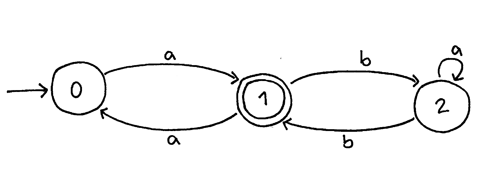
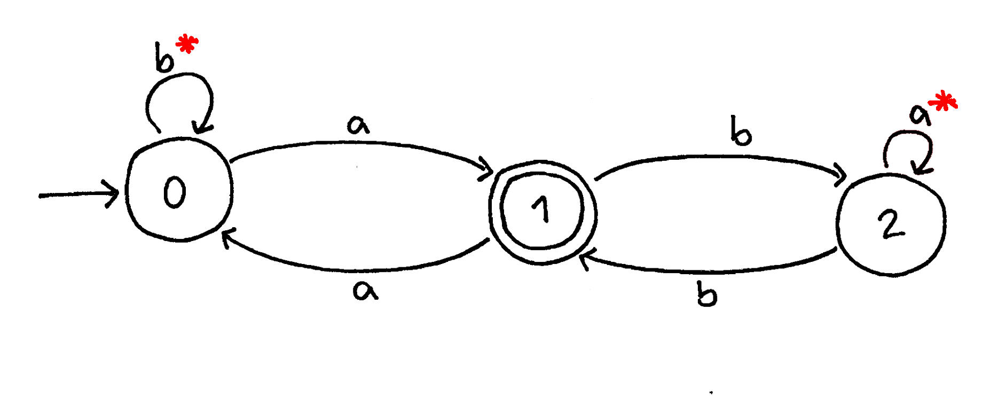
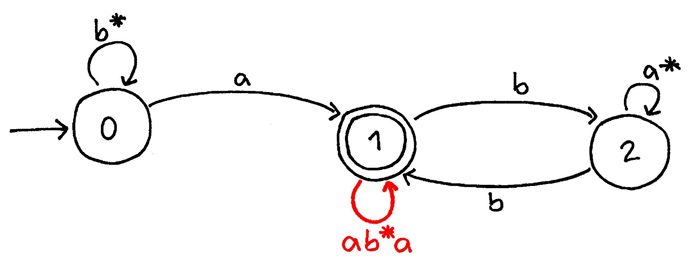
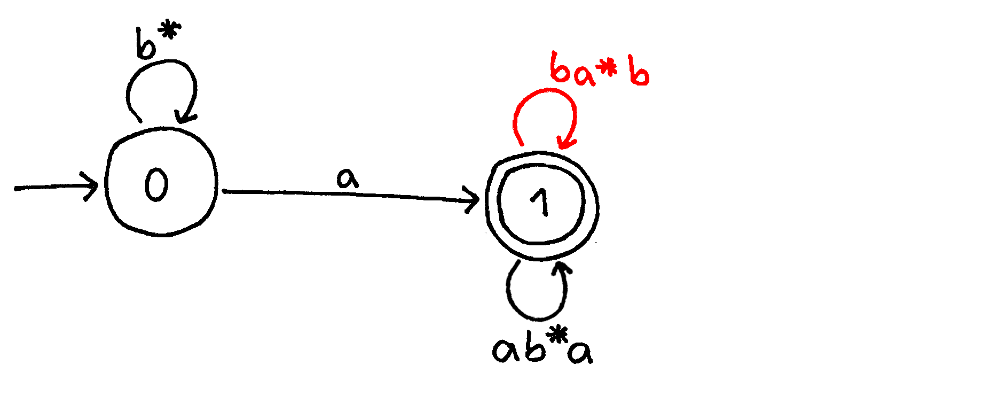
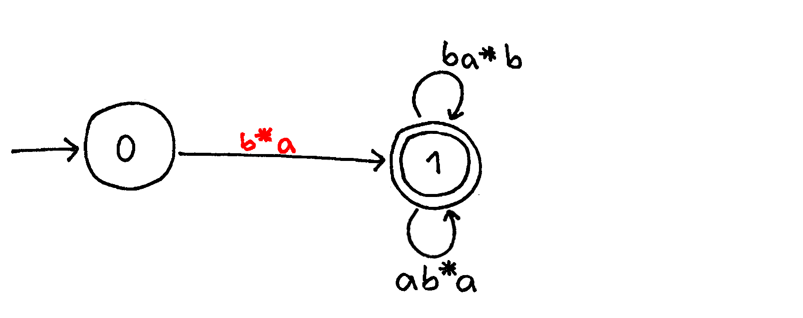

Converting NFA to Regex
Given a NFA, we can create a regular expression. Although there are several methods to do this, the most common for converting NFAs to Regex by hand is using state deletion. We systematically delete one state at a time while maintaining the overall structure of the NFA by building up the expressions on each arc until we are left with a single regular expression.
The best way to understand this method is to work through an example.
- Below is the NFA we will convert to a regular expression.
 - First, add a Kleene star to the loops on states 0 and 2. Because the arc loops back to the same state, you can have zero or more of the chosen character, indicated by the star.
 - Next, we will prepare to delete state 0. State 0 forms a loop to and from state 1. We add this loop to state 1, indicating the regex needed to travel from state 1 to state 0 > a, through state 0 > b*, and back to state 1 > a to form ab*a.
 - Now we will perform the same operation to remove state 2. From state 1 > b to state 2 > a* back to state 1 > b to form a loop with ba*b.
 - We will now continue to work to delete state 0. Combine the loop on state 0 with the arc leading to state 1 to form the regex b*a.
 - Finally, we combine the arc leading from state 0 to state 1, the final state. We need b*a to travel from state 1 to state 0. Then we have two loops, which we connect with an or because we can either loop through the top loop or the bottom loop. Presto!

Here is an example of how to apply these rules:
Click below to see more examples to practice:
Learn more